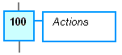
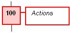
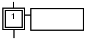

A step represents a stable state. It is drawn as a square box in the SFC chart. Each must step of a program is identified by a unique number. At run time, a step can be either active or inactive according to the state of the program. A step is identified by its number prefixed by GS.
To change the number of a step, transition or jump, select it and hit Ctrl+ENTER keys.
All actions linked to the steps are executed according to the activity of the step.
|
Inactive step |
Active step |
|
 |
 |
In conditions and actions of the SFC program, you can test the step activity by specifying its name ("GS" plus the step number) followed by ".X".
GS100.X Is TRUE if step 100 is active.
(Expression has the BOOL data type).
You can also test the activity time of a step, by specifying the step name followed by ".T". It is the time elapsed since the activation of the step. When the step is de-activated, this time remains unchanged. It will be reset to 0 on the next step activation.
GS100.T Is the time elapsed since step 100 was
activated.
(Expression has the TIME data type).
Initial steps represent the initial situation of the chart when the program is started. There must be at least one initial step in each SFC chart. An initial step is marked with a double line:
